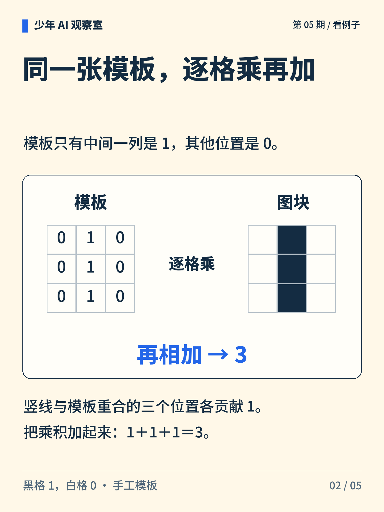
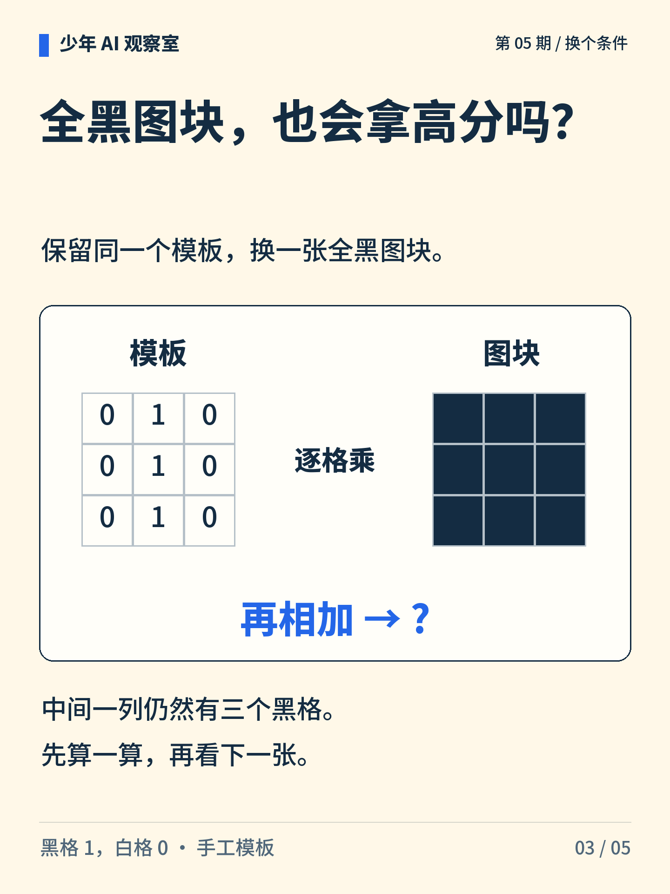
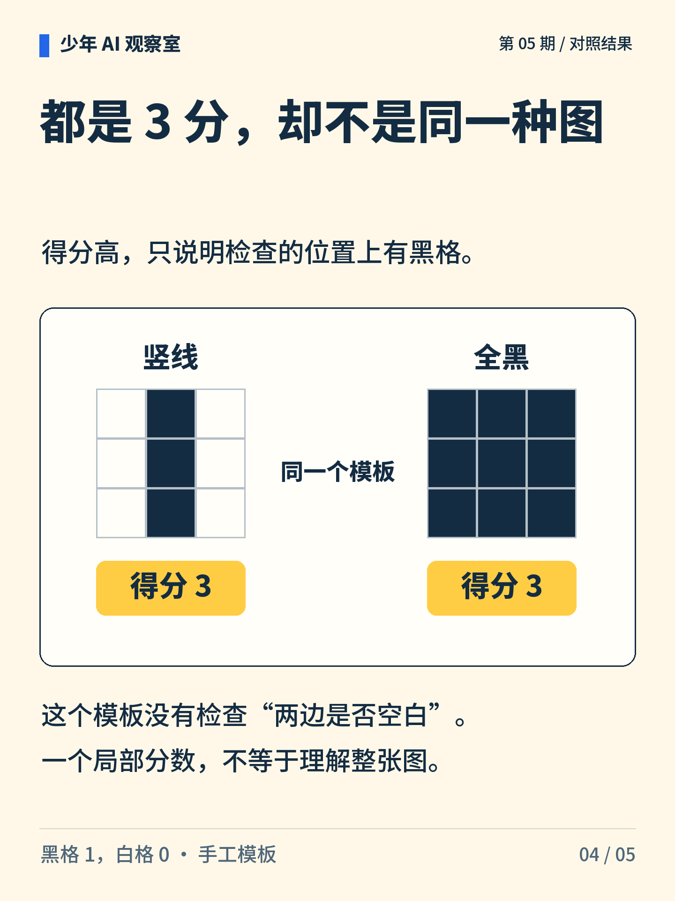
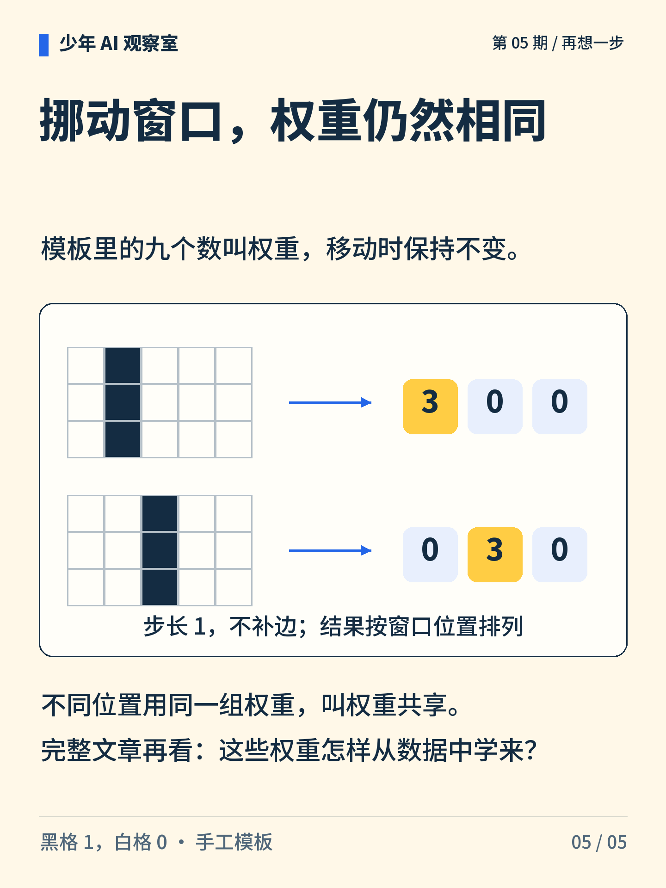

少年 AI 观察室 · 第 05 期
一个小窗口，能找到什么？
把同一张九格模板放到不同图块上，逐格相乘，再把结果加起来。高分一定代表认出了竖线吗？

图解文字
小窗口在格子图上移动，提示同一模板用于多个位置。封面格子是概念插画，精确计算以内页为准。

图解文字
模板中间一列为 1，其他位置为 0。与竖线图块逐格相乘再求和，结果为 3。

图解文字
把图块换成全黑，模板不变。只有中间三格参与求和，结果是多少？

图解文字
竖线和全黑都得 3 分。两侧乘以 0，因此本模板无法区分它们。

图解文字
同一 3×3 模板在 3×5 图上从左到右滑动。两幅图的三个结果分别为 3、0、0 和 0、3、0。
想一想
如果全黑和竖线得分一样，还需要什么线索才能分开？
展开参考思路
可以增加对左右两列的检查。例如要求中间一列全黑、两侧全白，就能在这两个图块中区分竖线与全黑。这个办法只解决当前比较，更多图案仍需要另外检验。
模板得分相同，只说明被检查的局部线索相同。
模板是人为指定的九个数，黑为 1、白为 0。滑动示例步长为 1，不补边；局部得分不是分类结论。
正文首图为 AI 辅助生成的概念插画；第 2—5 张图按核对过的文字与规则绘制。
延伸阅读资料
文中算例与图解用于说明原理，不是实际模型的测评结果。研究结论对应以下资料。〔1〕 PyTorch，Conv2d（官方文档；访问日期：2026-10-05）。
https://docs.pytorch.org/docs/stable/generated/torch.nn.Conv2d.html
〔2〕 Stanford CS231n，Convolutional Neural Networks（课程笔记；访问日期：2026-10-05）。
https://cs231n.github.io/convolutional-networks/
〔3〕 Krizhevsky、Sutskever、Hinton，2012，ImageNet Classification with Deep Convolutional Neural Networks，NeurIPS。
https://proceedings.neurips.cc/paper/2012/hash/c399862d3b9d6b76c8436e924a68c45b-Abstract.html
书目信息沿用原稿，本轮未重新核验外部网页的可访问性。